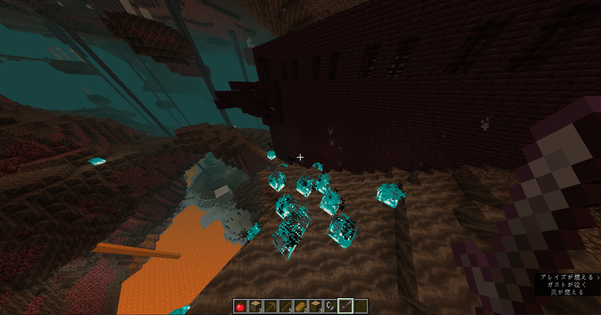

マイクラのサイトはじめました
こんにちは今日からマインクラフトについてのサイトを書くことにしました。

自己紹介
僕は小さい頃からマインクラフトをやっていてもう何年間かやっています。
なのでマインクラフトのことは意外と知っています。なのでマイクラのことに
ついて紹介するコーナーでしょうかいしようとおもいます。よろしくおねがいします。
これから週３に一回更新したいと思います。もしも更新できなかったらごめんなさい
マインクラフトのことについて
マインクラフトとはMojang・マイクロソフトが開発していて販売してるゲームである
今年で１０周年を迎えてるゲーム冒険をしたり畑を作って収穫したりいるんな建物を作ったり
ワールドを観光したりできるゲームでmodを入れたりするといつものマイクラに追加要素
を入れることができるゲームです
二回目更新しました
19w46aアプデキターーー何が変わったかわからないけど多分1.15へ近づいたのならまだ良い
1.15が待ち遠しーーー今回は追加されたアイテムを紹介します。
1 ハニーブロック これはスライムブロックのはねないバージョンです。
2 ハニカムブロック これはあまり何かはわかりません
三回目更新しました
マイクラ20w10aアップデートキターーー
